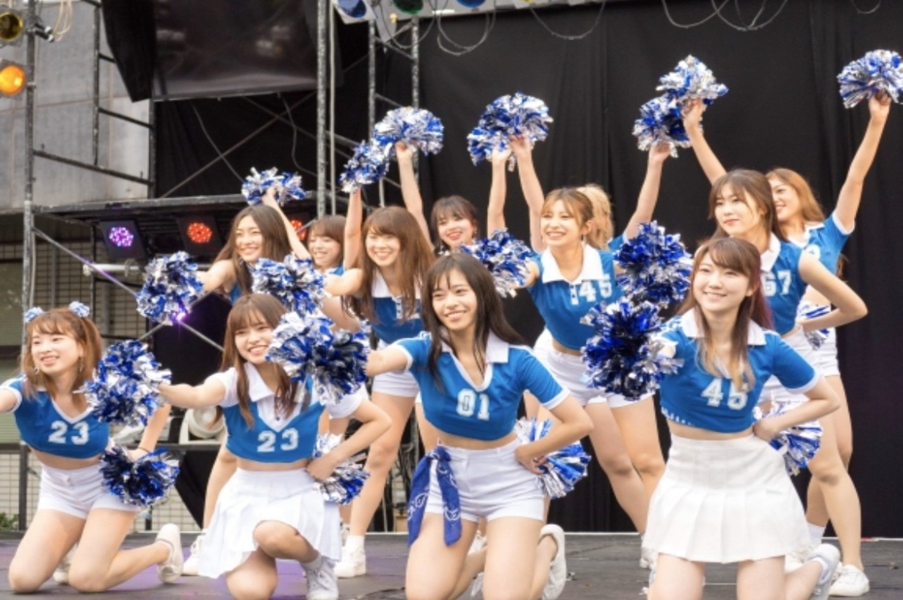
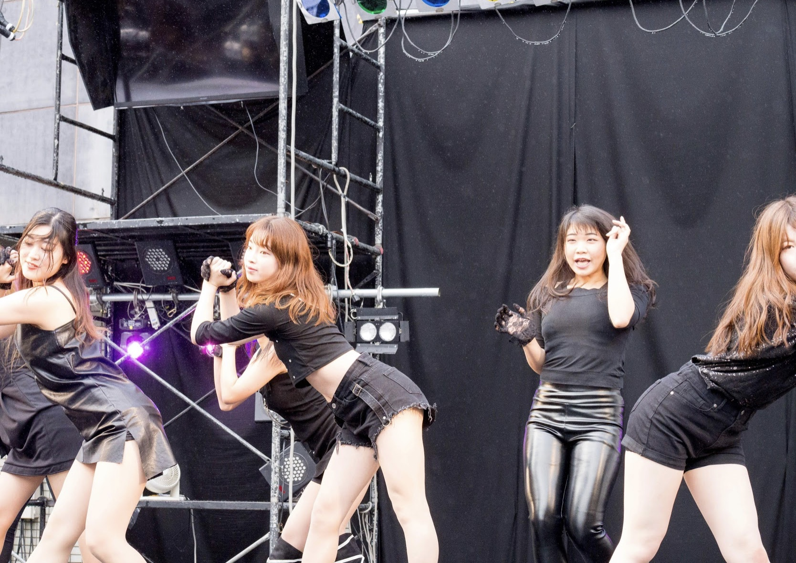
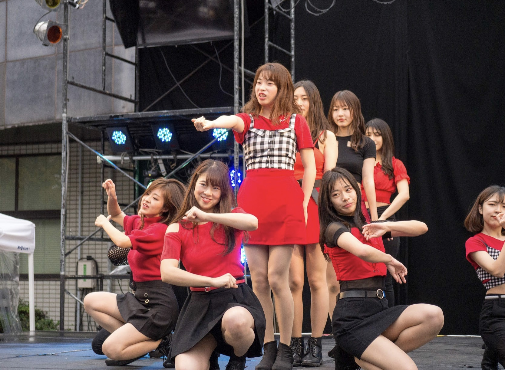
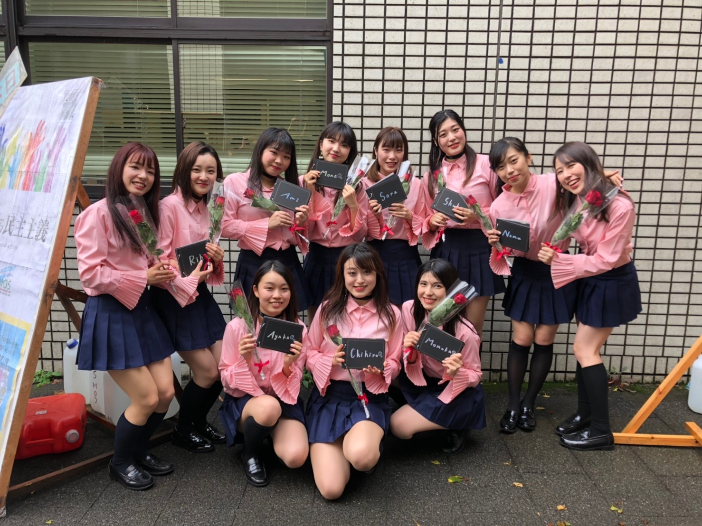
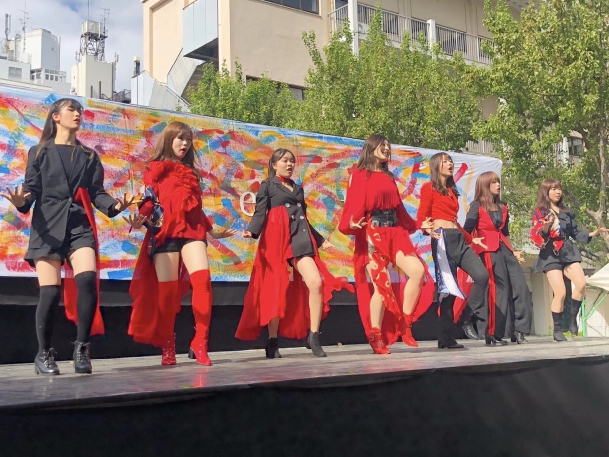
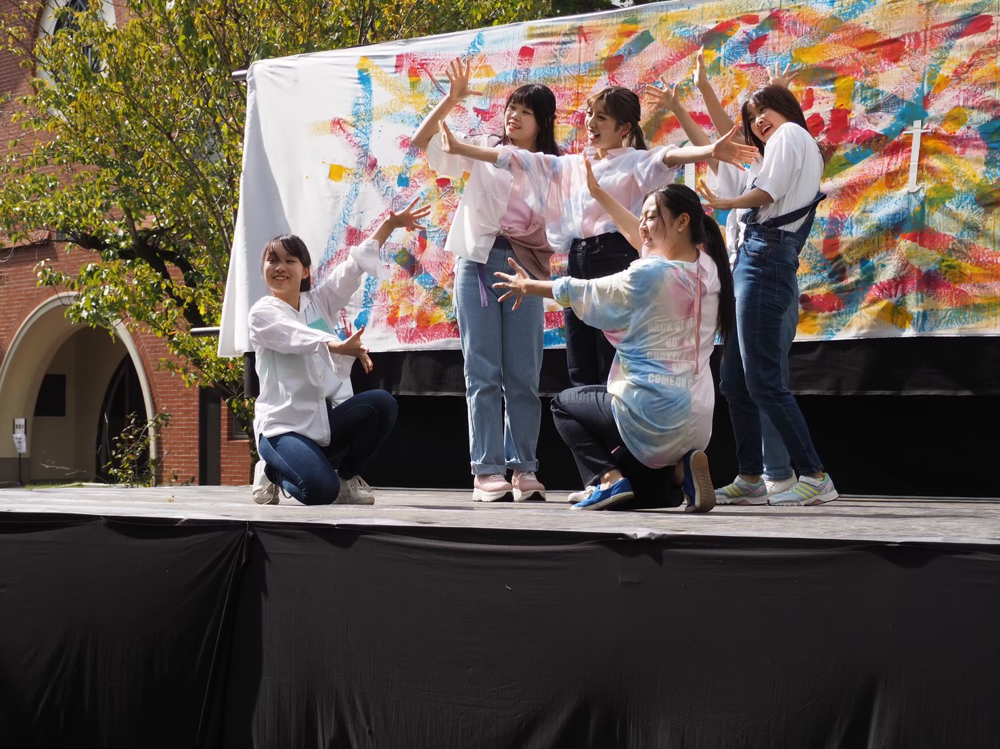
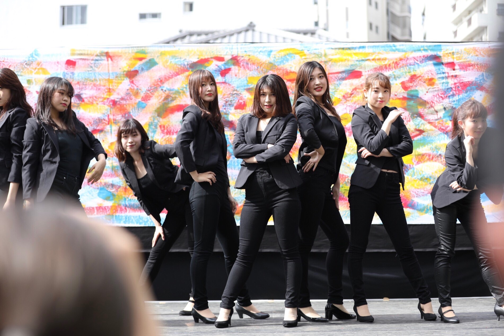
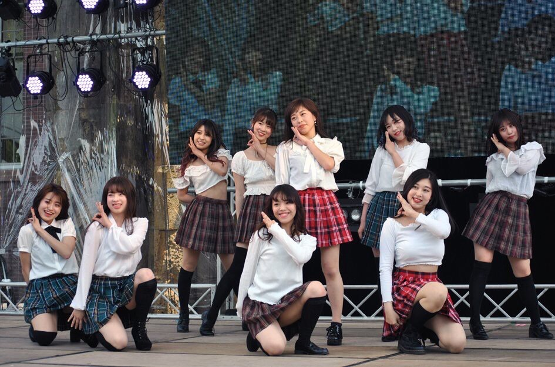
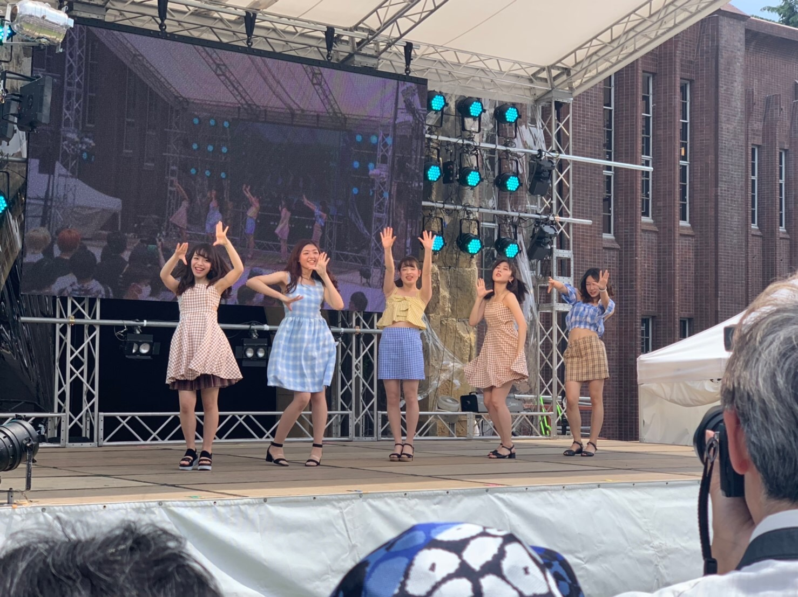
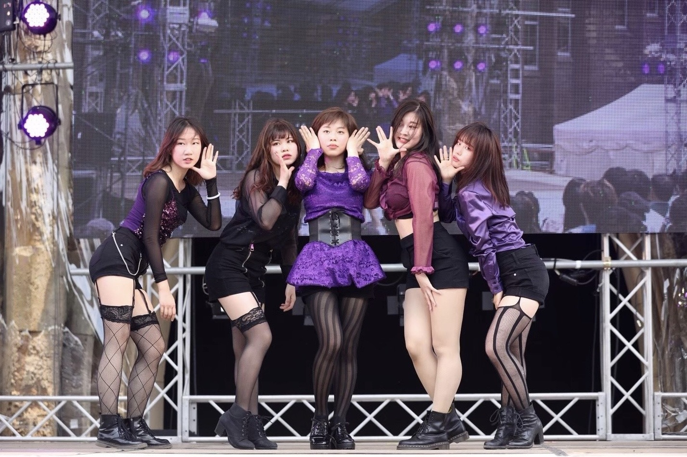

Gallery
2019年駒場祭公演
happy / wjsn




2019年目白祭公演
DKDK / fromis_9

PIRI / Dreamcatcher

이뻐이뻐 / PRODUCE X 101

Run Devil Run / SNSD
2019年五月祭公演
La Vie en Rose / IZ*ONE

Yes or Yes / TWICE

Power Up / Red Velvet

Rumor / Produce48